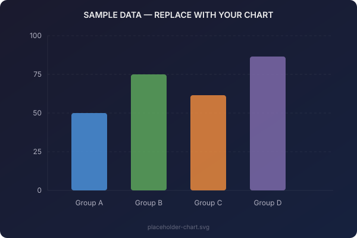

Introduction to Research Methods
Foundations of Empirical Inquiry
Dr. Jane Smith
Department of Psychology, University Name
Semester 1, 2026
Types of Research
Quantitative
Numerical data
Statistical analysis
Experiments & surveys
Qualitative
Text & interviews
Depth and context
Case studies & ethnography
Mixed methods combine both approaches for a more
complete picture of the research question.
Visualising Your Data
Bar charts for group comparisons
Line charts for trends over time
Scatter plots for relationships
Box plots for distributions

Figure 1. Sample data across four experimental groups.
Key Concepts (Revealed One by One)
Hypothesis formation
Operationalisation of variables
Data collection and sampling
Statistical inference and reporting
This Slide Has Speaker Notes
Speaker notes let you keep private reminders that only you can
see while presenting. The audience sees the slide; you see the
notes in a separate window.
These are example speaker notes. Only the presenter sees this
panel. Use it for talking points, timing cues, or reminders.
- Remind students about the assignment deadline.
- Mention the optional reading list on the course site.
- Ask if anyone has questions before the break.